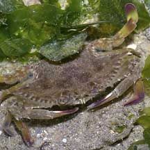
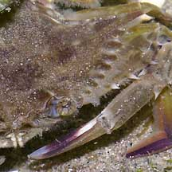
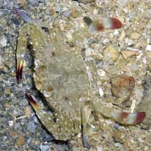
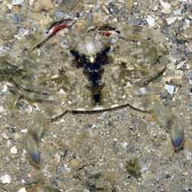
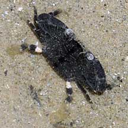
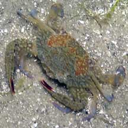

|
|
| crabs text index | photo index |
| Phylum Arthropoda > Subphylum Crustacea > Class Malacostraca > Order Decapoda > Brachyurans > Family Portunidae |
| Tiny
Flower crab Portunus pelacigus Family Portunidae updated Dec 2019 Where seen? Tiny swimming crabs are commonly seen on our Northern shores, especially in areas with seaweeds and seagrasses. They particularly active at night. They are probably juvenile Flower crabs (Portunus pelagicus). Features: Body width 2-6cm. Generally beige, brown with light spots but no striking markings or patterns. Their eyes are wide apart and they have 8-9 spines on the sides of their bodies. |
|
 Changi, Apr 05 |
 |
 Sisters Island, Jul 07 |
|
 Sentosa, Jun 07 |
 Berlayar Creek, Apr 09 |
 Chek Jawa, Feb 05 |
| Tiny Flower crabs on Singapore shores |
On wildsingapore
flickr
|
| Other sightings on Singapore shores |